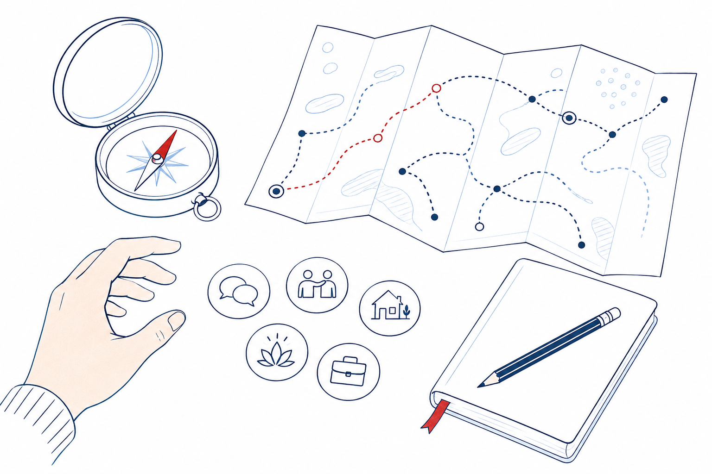

Eiropas Savienības līdzfinansēts sociālās inovācijas projekts
Atlabšanas ceļvedis
Biedrība “Inovāciju prakses centrs “Osta”” īsteno projektu “Atlabšanas ceļvedis”, lai izstrādātu un izmēģinātu jaunu sabiedrībā balstītu atlabšanas atbalsta pakalpojumu.
Projektu administrē Sabiedrības integrācijas fonds. Tas tiek īstenots 4.4.1.1. pasākumā “Atbalsts jaunām pieejām sabiedrībā balstītu sociālo pakalpojumu sniegšanā”.
- Īstenošanas laiks
- 01.09.2026.–28.02.2028.
- Projekta Nr.
- 4.4.1.1./4/013
- Līguma Nr.
- 4.4.1.1./4/013/L3

Par projektu
Latvijā cilvēkam pēc atkarības ārstēšanas vai rehabilitācijas bieži pietrūkst strukturēta profesionāla atbalsta, lai nostiprinātu atlabšanu un atgrieztos ikdienas dzīvē. Projekts “Atlabšanas ceļvedis” izstrādās un 12 mēnešus izmēģinās jaunu sabiedrībā balstītu pakalpojumu, kas palīdzēs aizpildīt šo atbalsta plaisu.
Projekts paredzēts pilngadīgiem cilvēkiem, kuri atrodas stabilā atlabšanas procesā pēc atkarību izraisošu vielu vai procesu lietošanas pārtraukšanas. Dalībai nav obligāti jābūt saistītai ar formālas rehabilitācijas programmas pabeigšanu.
Ko piedāvās pakalpojums
- individuālas sociālā darbinieka, psihologa un ģimenes konsultanta konsultācijas;
- spēka pieejā balstītu gadījuma vadīšanu un individuālu atlabšanas plānu;
- kopienas grupas un līdzinieka-konsultanta atbalstu;
- tematiskus seminārus un kopienas pasākumus;
- digitālu informatīvo resursu “Ceļvedis pēc rehabilitācijas”.
Pakalpojums būs balstīts atlabšanas filozofijā, traumas izpratnē, dzimumjutīgā un cilvēka cieņu respektējošā praksē. Liela daļa individuālā atbalsta būs pieejama tiešsaistē, tādēļ projektā varēs iesaistīties cilvēki no visas Latvijas.
Plānotie rezultāti
Projektā plānots iesaistīt vismaz 20 cilvēkus, nodrošināt vismaz 160 individuālās konsultācijas, 24 grupu tikšanās, 10 tematiskos seminārus un trīs kopienas pasākumus. Projekta noslēgumā publicēsim pakalpojuma metodiku un ietekmes izvērtējumu, lai izstrādāto modeli varētu izmantot arī citas organizācijas un pašvaldības.
Īstenošanas laiks
No 2026. gada 1. septembra līdz 2028. gada 28. februārim.
Informāciju par pieteikšanos dalībai publicēsim, tuvojoties pakalpojuma izmēģināšanas sākumam.
Projekta jaunumi
IPC “Osta” uzsāk projektu “Atlabšanas ceļvedis”
Informācija par projekta mērķi, plānoto pakalpojumu, īstenošanas laiku un finansējumu.
Programma un finansējums
Projektu administrē Sabiedrības integrācijas fonds.
Projekts tiek īstenots Eiropas Savienības kohēzijas politikas programmas 2021.–2027. gadam 4.4.1. specifiskā atbalsta mērķa “Veicināt nabadzības vai sociālās atstumtības riskam pakļauto personu sociālo integrāciju, izmantojot sociālās inovācijas” 4.4.1.1. pasākumā “Atbalsts jaunām pieejām sabiedrībā balstītu sociālo pakalpojumu sniegšanā”.
Projekta kopējās attiecināmās izmaksas ir 75 168,84 eiro. Projektu līdzfinansē Eiropas Savienība — Eiropas Sociālais fonds Plus (85 %) un Latvijas valsts budžets (15 %).
Projekta numurs: 4.4.1.1./4/013. Līguma numurs: 4.4.1.1./4/013/L3.
Saziņa
Jautājumiem par projektu rakstiet uz osta.centrs@gmail.com vai zvaniet +371 22300920.